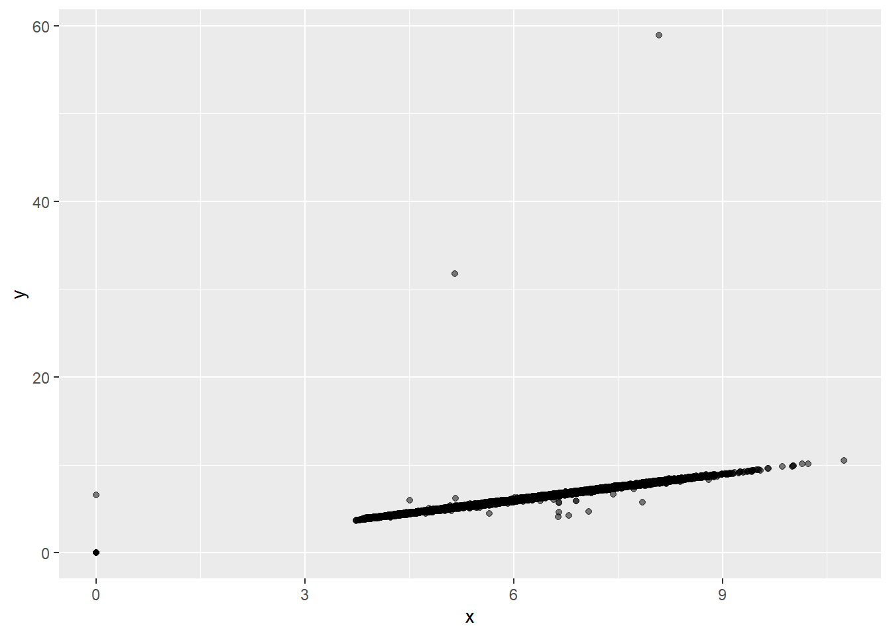
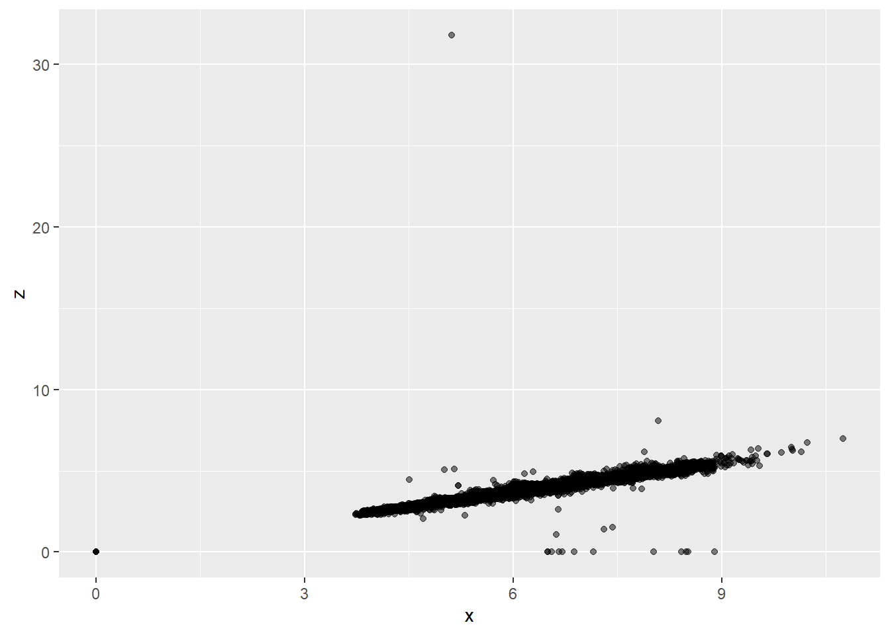
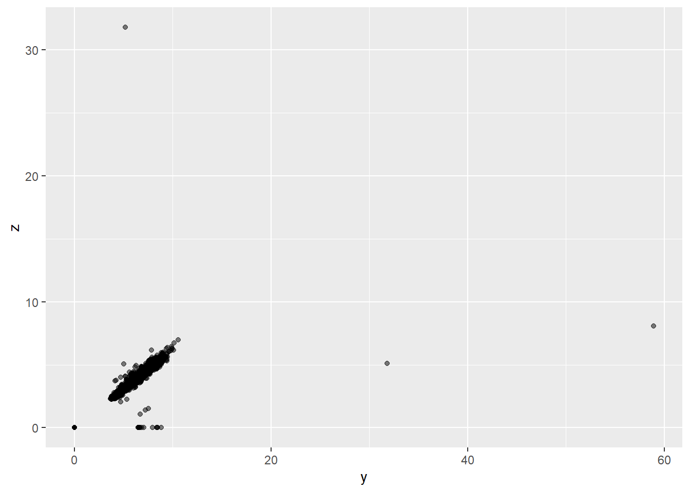
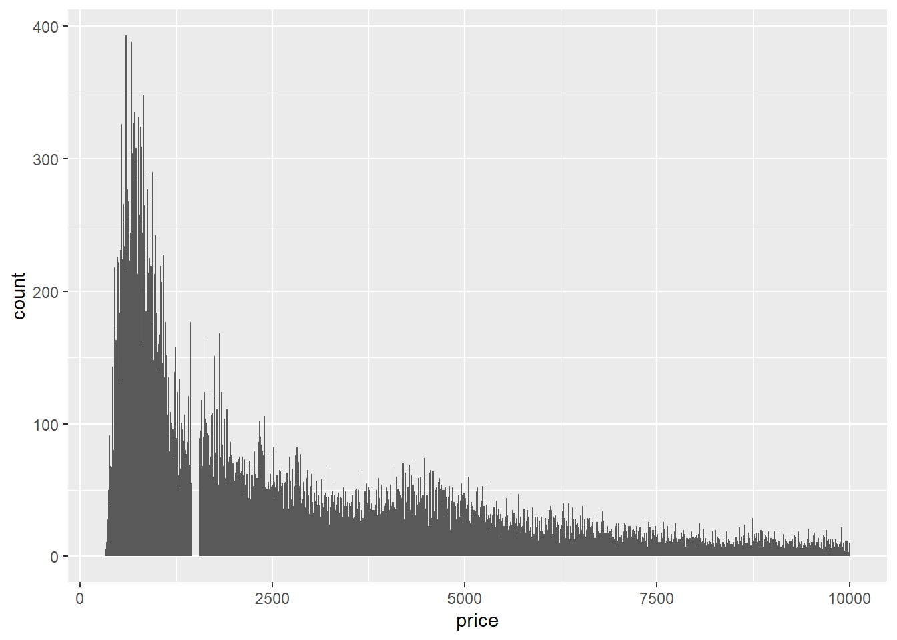
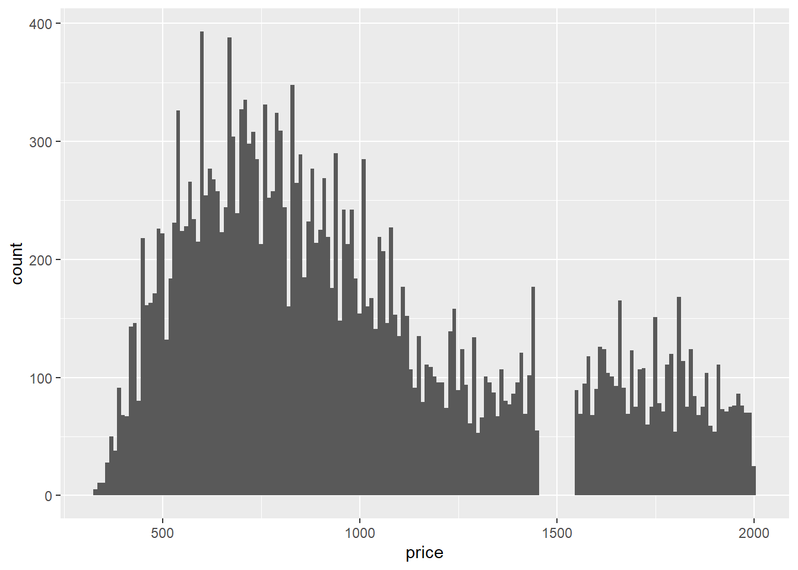
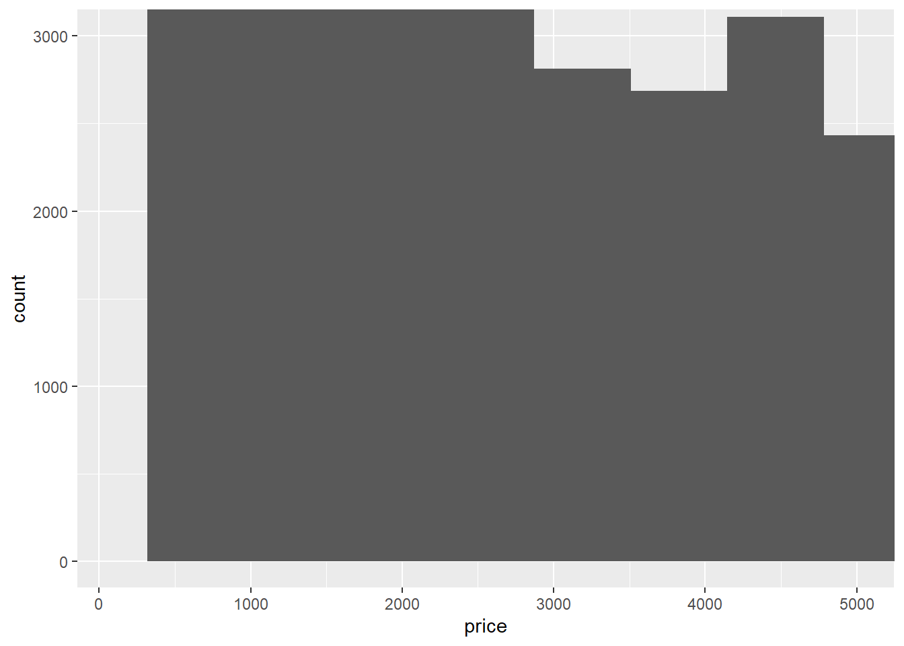
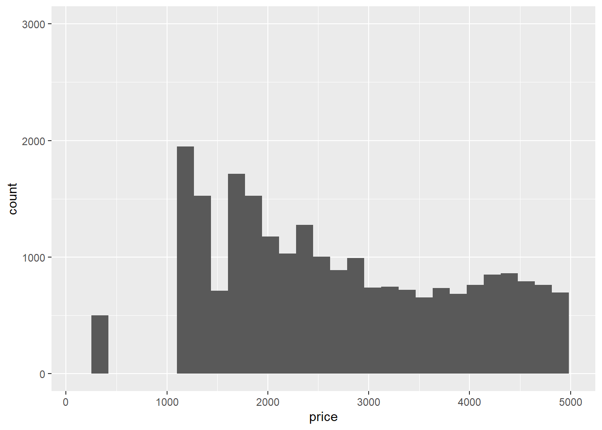

Last compiled: 2021-10-07 22:47:54
For Week 5: read WG chapters 6-8.
x, y, and z variables in diamonds. What do you learn? Think about a diamond and how you might decide which dimension is the length, width, and depth.library(tidyverse)
summary(select(diamonds, x, y, z))## x y z
## Min. : 0.000 Min. : 0.000 Min. : 0.000
## 1st Qu.: 4.710 1st Qu.: 4.720 1st Qu.: 2.910
## Median : 5.700 Median : 5.710 Median : 3.530
## Mean : 5.731 Mean : 5.735 Mean : 3.539
## 3rd Qu.: 6.540 3rd Qu.: 6.540 3rd Qu.: 4.040
## Max. :10.740 Max. :58.900 Max. :31.800The summary of the selected variables provides a good initial scan of our dataset. Note that x variable is the diamond length in mm, y is width in mm, and z is depth in mm. The typical values of x and y are larger than z, with x and y having inter-quartile ranges of 4.7–6.5, while z has an inter-quartile range of 2.9–4.0.
diamonds %>% arrange(desc(x)) %>% top_n(5)## # A tibble: 5 x 10
## carat cut color clarity depth table price x y z
## <dbl> <ord> <ord> <ord> <dbl> <dbl> <int> <dbl> <dbl> <dbl>
## 1 5.01 Fair J I1 65.5 59 18018 10.7 10.5 6.98
## 2 4.5 Fair J I1 65.8 58 18531 10.2 10.2 6.72
## 3 4.13 Fair H I1 64.8 61 17329 10 9.85 6.43
## 4 2 Premium H SI2 58.9 57 12210 8.09 58.9 8.06
## 5 0.51 Very Good E VS1 61.8 54.7 1970 5.12 5.15 31.8diamonds %>% arrange(desc(y)) %>% top_n(5)## # A tibble: 5 x 10
## carat cut color clarity depth table price x y z
## <dbl> <ord> <ord> <ord> <dbl> <dbl> <int> <dbl> <dbl> <dbl>
## 1 2 Premium H SI2 58.9 57 12210 8.09 58.9 8.06
## 2 5.01 Fair J I1 65.5 59 18018 10.7 10.5 6.98
## 3 4.5 Fair J I1 65.8 58 18531 10.2 10.2 6.72
## 4 4.13 Fair H I1 64.8 61 17329 10 9.85 6.43
## 5 0.51 Very Good E VS1 61.8 54.7 1970 5.12 5.15 31.8diamonds %>% arrange(desc(z)) %>% top_n(5)## # A tibble: 5 x 10
## carat cut color clarity depth table price x y z
## <dbl> <ord> <ord> <ord> <dbl> <dbl> <int> <dbl> <dbl> <dbl>
## 1 0.51 Very Good E VS1 61.8 54.7 1970 5.12 5.15 31.8
## 2 2 Premium H SI2 58.9 57 12210 8.09 58.9 8.06
## 3 5.01 Fair J I1 65.5 59 18018 10.7 10.5 6.98
## 4 4.5 Fair J I1 65.8 58 18531 10.2 10.2 6.72
## 5 4.13 Fair H I1 64.8 61 17329 10 9.85 6.43The top 5 diamonds with largest x, y, and z are shown above. We suspect that y = 58.90 may be a typo. We can attempt to see the outliers visually:
ggplot(diamonds, aes(x = x, y = y)) +
geom_point(alpha = 0.5)
ggplot(diamonds, aes(x = x, y = z)) +
geom_point(alpha = 0.5)
ggplot(diamonds, aes(x = y, y = z)) +
geom_point(alpha = 0.5)
price. Do you discover anything unusual or surprising? (Hint: Carefully think about the binwidth and make sure you try a wide range of values.)ggplot(filter(diamonds, price < 10000), aes(x = price)) +
geom_histogram(binwidth = 10, center = 0)
From our graph above, We see something is off. To get a close-up view, we restrict the price range:
ggplot(filter(diamonds, price < 2000), aes(x = price)) +
geom_histogram(binwidth = 10, center = 0)
There are no diamonds with a price between $1,455 and $1,545.
Are there anything else you notice?
diamonds %>%
filter(carat >= 0.99, carat <= 1) %>%
count(carat)## # A tibble: 2 x 2
## carat n
## <dbl> <int>
## 1 0.99 23
## 2 1 1558There are 23 diamonds that are 0.99 carat weight, while 1558 diamonds with 1.00 carat weight. Maybe diamond sellers round up the carat? I am not too sure.
coord_cartesian() vs xlim() or ylim() when zooming in on a histogram. What happens if you leave binwidth unset? What happens if you try and zoom so only half a bar shows?ggplot(diamonds) +
geom_histogram(mapping = aes(x = price)) +
coord_cartesian(xlim = c(100, 5000), ylim = c(0, 3000))
ggplot(diamonds) +
geom_histogram(mapping = aes(x = price)) +
xlim(100, 5000) +
ylim(0, 3000)
The coord_cartesian() function zooms in on the area specified by the limits, after having calculated and drawn the geoms. Since the histogram bins have already been calculated, it is unaffected.
However, the xlim() and ylim() functions influence actions before the calculation of the stats related to the histogram. Thus, any values outside the x- and y-limits are dropped before calculating bin widths and counts. This can influence how the histogram looks.
Missing values are removed when the number of observations in each bin are calculated and warning sign is generated.
na.rm = TRUE do in mean() and sum()?This option removes NA values from the vector prior to calculating the mean and sum.